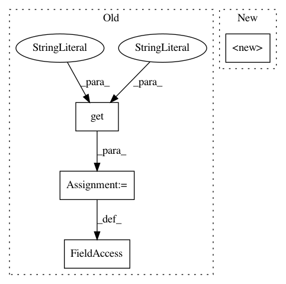

0cd42478586c9cb1febb6b76eea068aac8869a1e,sacred/ingredient.py,Ingredient,__init__,#Ingredient#Any#Any#Any#Any#,38
Before Change
_caller_globals = _caller_globals or inspect.stack()[1][0].f_globals
mainfile_name = _caller_globals.get("__file__", ".")
self.base_dir = os.path.dirname(os.path.abspath(mainfile_name))
self.doc = _caller_globals.get("__doc__", "")
self.mainfile, self.sources, self.dependencies = \
gather_sources_and_dependencies(_caller_globals)
if self.mainfile is None and not interactive:
raise RuntimeError("Defining an experiment in interactive mode! "
After Change
See :ref:`captured_functions` for more information.
If a ``prefix`` is specified, the search for suitable
entries is performed in the corresponding subtree of the configuration.
if function in self.captured_functions:
return function
captured_function = create_captured_function(function, prefix=prefix)
self.captured_functions.append(captured_function)
return captured_function
@optional_kwargs_decorator
def pre_run_hook(self, func, prefix=None):
In pattern: SUPERPATTERN
Frequency: 3
Non-data size: 4
Instances
Project Name: IDSIA/sacred
Commit Name: 0cd42478586c9cb1febb6b76eea068aac8869a1e
Time: 2018-01-24
Author: dismaldenizen@gmail.com
File Name: sacred/ingredient.py
Class Name: Ingredient
Method Name: __init__
Project Name: deepmipt/DeepPavlov
Commit Name: d86f0ef86868899b112ac61e598a3333fac66ad2
Time: 2018-01-24
Author: arkhipov@yahoo.com
File Name: deeppavlov/models/ner/ner.py
Class Name: NER
Method Name: __init__
Project Name: pantsbuild/pants
Commit Name: 26628461bff6856792f49ba8fcbe6375d81e9f25
Time: 2015-04-24
Author: zundel@squareup.com
File Name: src/python/pants/ivy/bootstrapper.py
Class Name: Bootstrapper
Method Name: __init__